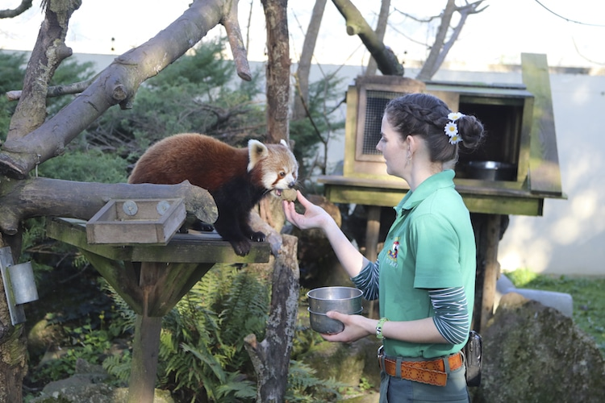
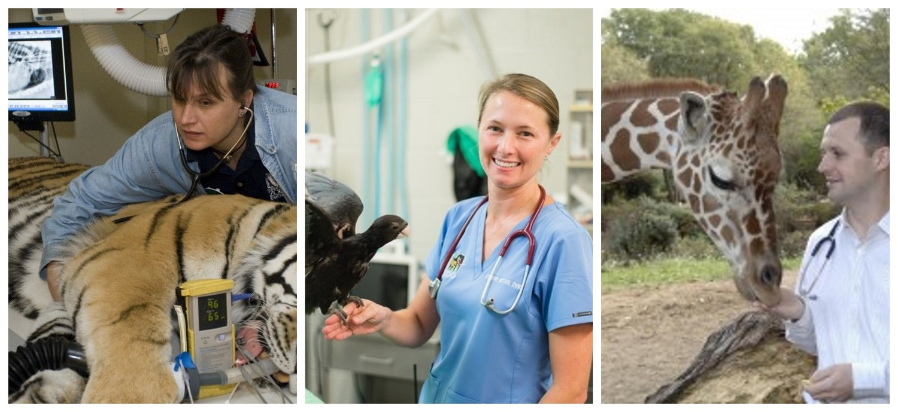
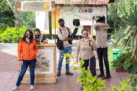

conoce nuestro perosonal
Estamos conformados por
Esta conformado por los mejores de los mejore en cada una de una de sus areas en epecifico, en nuestro zoloogico umentamos las comunidad y el trabajo en equipo.
Nuestro personal esta capacida en casa una de las areas correspindientea a su trabajo en espcifico, todos y cas una estan adiestrado para dar la mejor atencian a nuestro vicitantes, no solo estna capacitado en sus are si tambien en las demas arear correspondientes
cuidadores
Nuestro cuidadores se encangan de darles la mejor atenciones a nuestros animale tanto como darles de comer y carriño to todo lo memas sindo lo que buscamos un lugar donde se puden progresar
veterinario
Juan Carlos Carrascal Velásquez, PhD en Medicina Veterinaria, especialista en Bienestar Animal, y docente de la Universidad de Córdoba, el premio de Bienestar Animal 2022 de la Asociación Mundial Veterinaria, en ceremonia celebrada en Abu Dhabi, Emiratos Árabes Unidos
cuidadores de animales
Los cuidadores de animales cuidan de los animales, cada uno en su especialidad. Limpian el recinto y las jaulas, dan comida y agua a los animales, controlan su estado de salud y atienden a los animales enfermos y heridos. Participan en proyectos de investigación, conservación y reproducción.
